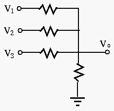
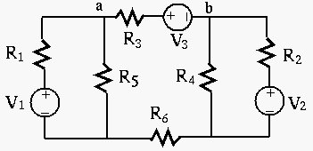

Next: About this document ... Up: midterm1_19f_key Previous: Instructions
 ,
,  and of the circuit shown below, where all
resistors have the same resistance value
and of the circuit shown below, where all
resistors have the same resistance value  . Extrapolate your result to
cover the general case of
. Extrapolate your result to
cover the general case of  inputs ,
inputs ,
 .
.

Solution:

In the figure below, ,
,
,
,
,
 . Find voltage
. Find voltage 

Solution: Use Thevenin's theorem.
 and as the load
and as the load
 :
:
, find current
In the circuit below, , ,
,
,
 . Find the current through
.
. Find the current through
.

Solution: Use superposition. First consider the current source  only with (short-circuit). Convert the delta composed of the top three
resistors (,
only with (short-circuit). Convert the delta composed of the top three
resistors (,  and
and  ) to Y:
) to Y:
 is in series with , and
is in series with , and  and
and  are in series with
and , respectively. Treating the two branches as two voltage dividers,
we find the voltage across is zero and therefore ,
are in series with
and , respectively. Treating the two branches as two voltage dividers,
we find the voltage across is zero and therefore ,
Next consider the voltage source  only, with (open-circuit).
The total resistance of the loop is , and the total current is
only, with (open-circuit).
The total resistance of the loop is , and the total current is
 , and the current through can be found
by current divider to be
. The current due to both and
is therefore
, and the current through can be found
by current divider to be
. The current due to both and
is therefore